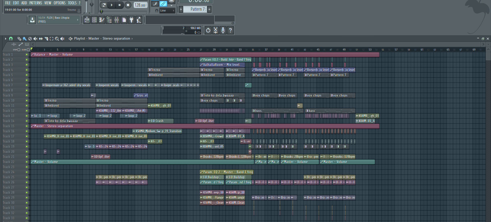

Intro
Najprej sem v Fl studio inportal suhi vokal ali akapelo, nato sem delal na akordih z klavirjem. Zatem sem v pattern dal ambientne zvoke, da sem naredil zvok boln poln. Ambient je bil gorenje lesa, ki sem ga stišal, tako, da je bil samo v ozadju. Nato sem obdelal vokal, da je lepo zvenel z akordi. Nato sem spodnje frekvenčne dele zapolil z basom.V intro sem na koncu dodal še element trobente.
Brake
V brake sem pustil enake elemente iz Introta. Nato sem razrezal vokal, da je pasal v muziko. Ambientni zvoki so se tu končali.
Build up
V build up sem razrezal element trobente, tako, da je dobro zvenel z bobni, ki sem jih dodal. Nato sem dal noter tudi biuld up snare, ki je še bolj zapolnil zvok in naredil občutek neke gradnje, ki bo kmalu prišla do vrha. Eden od elementov trobente sem naredil nižji in ko je ta zaigran se vse ostalo ustavi, to označuje, da smo na polovici build up-a. Pred koncem buildupa se 1. akord klavirja se trikrat ponovi. Za konec build upa sem dodal še efekt kravjega zvonca, ki sem ga znižal, ta se ponovi trikrat in bi lahko rekli, da je odštevanje za drop, poleg efekta kravjega zvonca, pa sem še dal 2 fill efekta, ki sta popestrila začetek dropa in označila konec build up-a z efektom kravjega zvonca.
Drop
Za drop sem najprej začel z bobni z kick-om in snear-om. Nato sem dodal efekte, kot so downlifterji in sestavil beat do konca. Ko sem imel bobne gotove, sem si zmislil ritem za bass. Potem ko sem imel to narejeno sem v ta ritem začel dodajat pe druge zvoke, da sem dobil dober bass. Ko sem končal z basom sem dodal še efekt sidechain (to je efekt, ki naredi, da se zvok umika po ritmu). Ko sem stem končal sem spet razrezal vokal in ga spremenil v melodijo. To melodijo sem obdelal tako, da sem dodal veliko zvočne distorcije, to je povzročilo, da melodija zveni agresivno, dodal sem tudi malo odmeva in spet dodal sidechain. Dodal sem še nekaj ambientnih efektov in stem končal muziko. Celoten komad sem skomresiral in ojačal.
